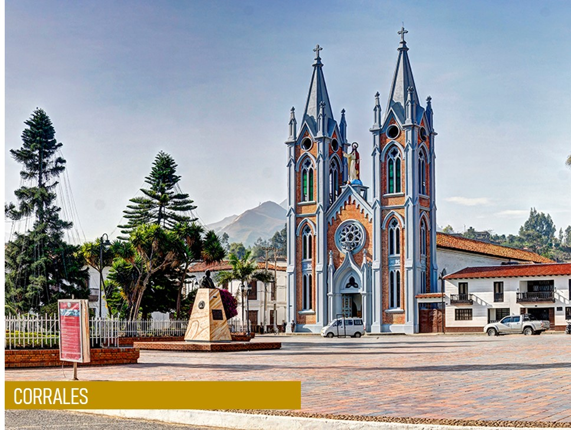
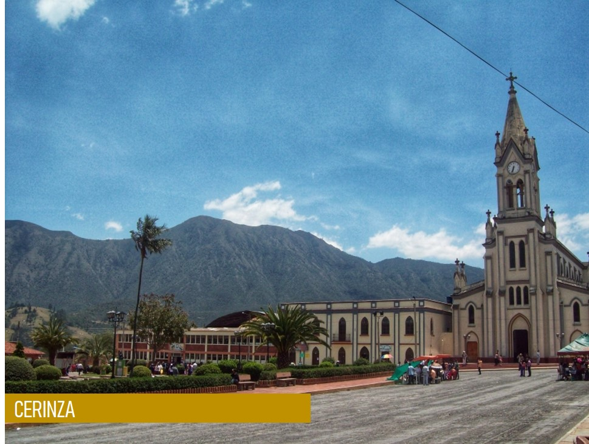
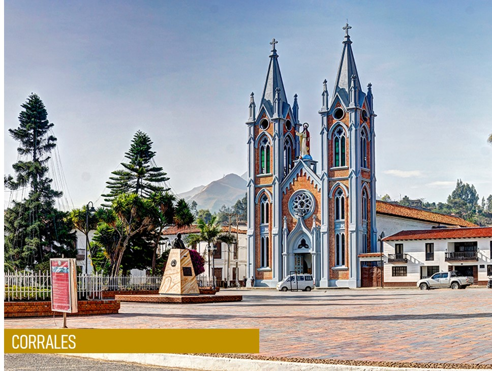
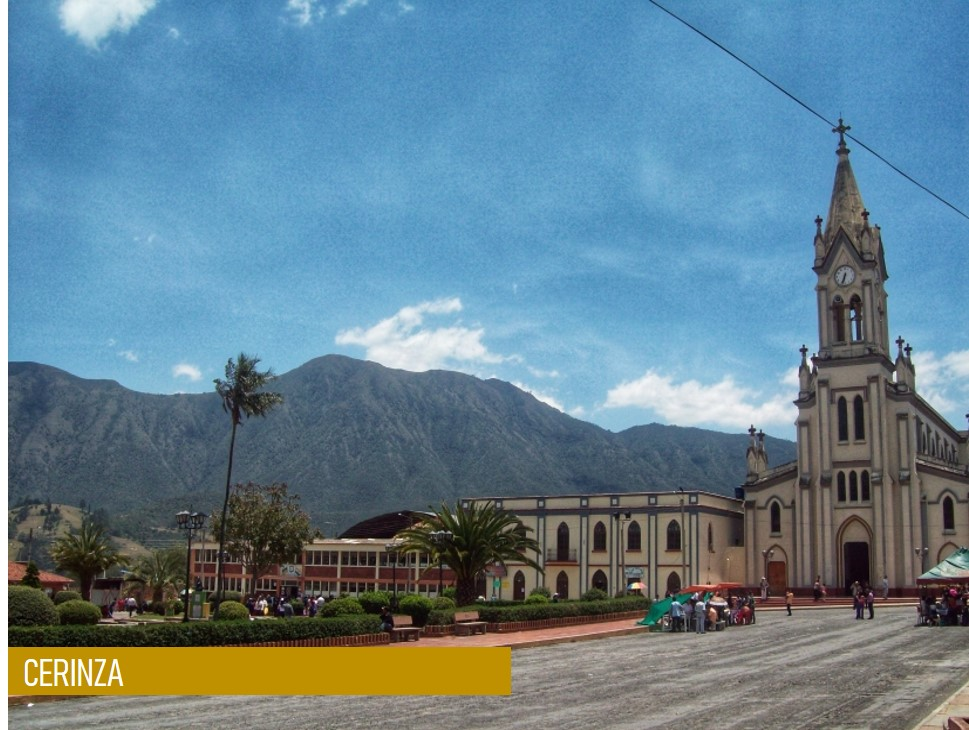
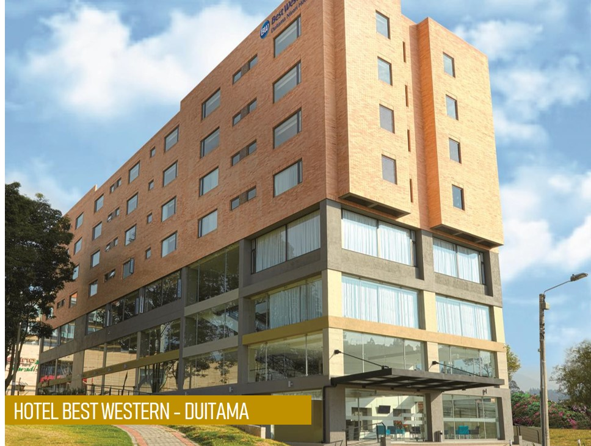
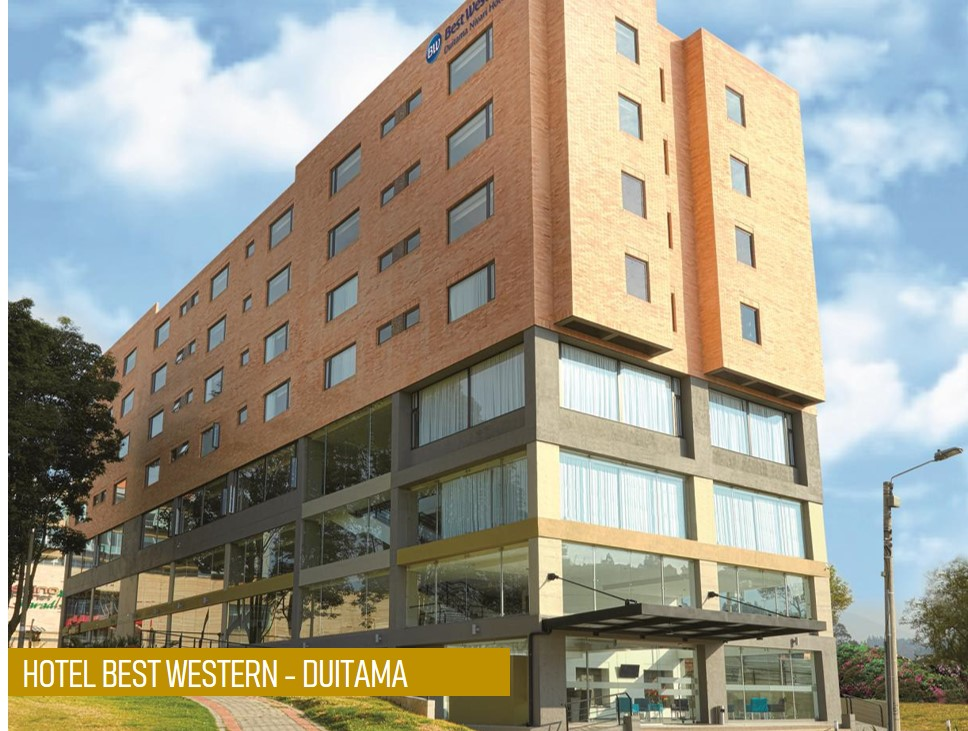

Boyacá tierra de historias
PROVINCIA TUNDAMA
La provincia de tundama posee su nombre por el cacique tundama, esta provincia se ubica al norte del departamento de Boyacá, cuenta con nueve municipios:
• Duitama (La Capital)
• Belén
• Busbanzá
• Cerinza
• Corrales
• Floresta
• Paipa
• Santa Rosa
• Tutazá
Seguidamente hablaremos de cada uno de los sitios turísticos que la provincia Sugamuxi tiene para ofrecer.
DUITAMA:
Duitama es uno de los municipios privilegiados en nuestro departamento y el país, pues su posición geográfica estratégica como cabeza de la provincia del Tundama y parte fundamental del corredor industrial de las cuatro provincias de mayor desarrollo del Departamento de Boyacá.
En Duitama uno de los lugares más populares y así mismo más visitados por los turistas es el nombrado Pueblito Boyacense, entre sus calles se pueden encontrar restaurantes de cocina típica e internacional, una capilla, cafés con tendencia orgánica, tiendas de productos típicos de la región, cervecerías artesanales y hasta un spa con piscina climatizada y planes románticos para parejas, igualmente hay hoteles boutique inspirados en cada uno de los pueblos boyacenses.
Otro de los atractivos turísticos en Duitama es El Sendero Ecológico La Zarza, el cual cuenta con una pequeña cascada cerca a la cima, se recomienda llevar mucha hidratación y comida ya que el recorrido de subida es un poco fuerte, también cuenta con vistas increíbles y en la cima se puede apreciar una panorámica de las montañas de alrededor y su vegetación. Ubicado a unos 2km del parque de la vereda la trinidad de la ciudad de Duitama.
BELÉN:
Belén es también llamado Tierra Noble y Legendaria. Se encuentra localizado en la Cordillera Oriental en la Provincia de Tundama al norte del Departamento de Boyacá, en la ruta Norte de Bogota, Tunja, Duitama, se ubica a una distancia de 25,8 km de la ciudad de Duitama Capital de la Provincia.
El Cerro Del Tíbet Los fines de semana es muy frecuentado por los practicantes de parapente y cometa delta. A más de 3.500 m. s. n. m. se levanta este cerro que hace muchos años fue un epicentro de la actividad volcánica en esta zona de la cordillera Oriental. Actualmente, no representa riesgo para la población. Se caracteriza por los afloramientos rocosos, ecosistemas de bosque, páramos húmedos y vegetación típica de esta zona, como frailejones, musgos y líquenes.
BUSBANZÁ:
Cuenta con 1.127 habitantes, 194 casas, ocho profesores y un solo barrio, y es el pueblo con menos habitantes en el país, para los habitantes de la zona rural del municipio. En lengua Muisca o Chibcha, Busbanzá significa "Tierra del Tributo".
CERINZA:
En Cerinza La gran mayoría de la población se dedica a la ganadería como actividad fundamental se origina el cambio de agricultura a ganadería por los altos costos de producción, heladas, comercialización, se presenta ésta como una alternativa económica: ganadería especializada para leche y ganado de doble propósito. La ganadería es de tipo extensivo, de pastoreo.
El municipio de Cerinza le ofrece a sus visitantes el componente físico-Biotico conformado por los recursos Naturales y el Ambiente. Además cuenta con áreas localizadas en la zona de vida de páramo y bosque seco montañoso bajo, sobre suelos de la asociación Munevar, miscelánea de páramo y miscelánea rocoso, ubicadas en las veredas de Toba, Novare, Centro rural y en la confluencia de las veredas El Chital, El Hato y San Victorino. Áreas que por su interés turístico dentro del municipio y para los municipios vecinos se pueden realizar actividades de recreación pasiva y contemplativa, estas correrías o excursiones están orientadas por personal calificado en el área del turismo ecológico.

CORRALES:
El terrirorio del municipio se halla sobre el altiplano Cundiboyacence. En su gastronomía caben destacar las famosas Génovas y en diciembre el decorado del pueblo lo hace de una gran atractivo turístico resaltando la belleza de Boyacá.
El plan más atractivo para quienes visitan Corrales es sin duda la iluminación navideña del municipio. La plaza central de Corrales se viste de luces, con un alumbrado que cubre la fachada de todos los edificios municipales. En el centro de la plaza se erige un enorme árbol de navidad que domina la vista del pueblo desde la lejanía. Es un plan muy común subir al techo de la pequeña capilla donde se encuentra el pesebre para tener una vista panorámica del alumbrado.
FLORESTA:
En el municipio de Floresta predominan los cultivos de tierra fría: maíz, cebada, papa y frutales. Es antigua e importante la producción de uvas, a partir de cepas Riesling y Pinot Noir, vendimias que se procesan en Punta Larga con la denominación de,"vinos de La Floresta, Tobasía" las hay sembradas en diferentes veredas del Municipio en total 35 Hct. También se siembra la Uchuvá. Ganadería: Vacunos con producción de leche, cerdos y ovinos.
Dentro de los planes más concurridos por los turistas se encuentra El Cañón de los Estoraques, dentro de su flora, se destaca los musgos conocidos con el nombre de Barba de Viejo, la planta llamada Caña-brava, con la que antiguamente se construían los techos de las casas, los canastos, las jaulas y los juegos pirotécnicos, igualmente se encuentra el Árbol de Laurel de grandes connotaciones simbólicas ya que en la Antigua Grecia y en el Imperio Romano, emperadores, guerreros, deportistas y poetas eran condecorados con una corona de Laurel que representaba el triunfo y la grandeza.

PAIPA:
Paipa es una población boyacense, turística por excelencia, famosa por sus aguas termales a las que les atribuyen beneficios terapéuticos, por la bondad de su clima y la belleza de sus paisajes. Además de estas características, Paipa es conocida por productos típicos como la almojábana, el pan de yuca y otros productos más.
Es considerado el municipio boyacense con mejor infraestructura hotelera del departamento, además por su tranquilidad y ubicación es perfecto para buscar descanso y recreación, lo mismo que para la realización de congresos y seminarios.
El parque termal en paipa es uno de los más recurridos en Paipa, este cuenta con: Masoterapia, Centro de hidroterapia, Spa termal, Centro biomédico, Parque acuatico.
Otro de sus principales atractivos encontramos: el Lago Sochagota, apto para practicar deportes náuticos y disfrutar de paseos en lancha el Pantano de Vargas, y su gran infraestructura hotelera y de servicios para todos los presupuestos.
SANTA ROSA:
stá situado sobre la Troncal Central del Norte a unos 67 kilómetros al norte de la ciudad de Tunja y a 197 kilómetros de la ciudad de Bogotá. Fue la capital de los departamentos de Tundama4 y de Santa Rosa5 a principios del siglo XX, durante el periodo 1905 a 1910.
TUTAZÁ:
La principal fuente económica del municipio es la agricultura y la ganadería. Por su clima frío, favorece la cultivacion de papa, maíz, frijol, cebada, trigo, haba, arveja. Los agricultores siembran en su mayoría papa y de la venta del producto, es que subsisten económicamente. También la ganadería es fuente de ingreso. Ahora gracias a los diferentes programas agropecuarios adelantados en la región, los habitantes tutaceños han aprendido a explotar de mejor manera sus pequeñas parcelas, dejando gran cantidad de estas para la explotación bovina.

 



 

TOURBOYACÁ
Sitio Web dedicado a todo aquel que quiera aprender más acerca de nuestro departamento,
especialmente, las provincias Tundama y Sugamuxi
Copyright (c) 2019
Todos los derechos reservados
¡SÍGUENOS EN NUESTRAS REDES SOCIALES!